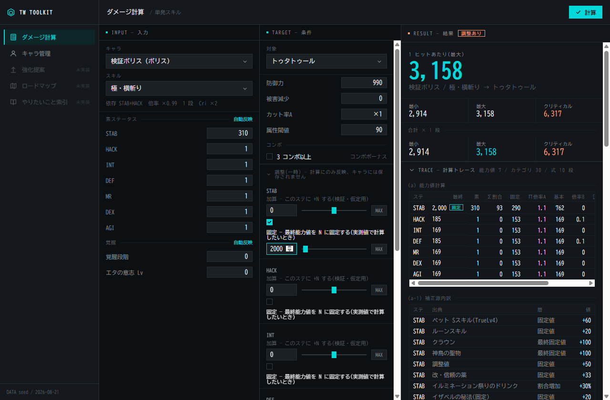

TalesWeaver Toolkit
TalesWeaver(MMORPG)プレイヤー向けのデスクトップツールキット。登録したキャラクターを軸に、ダメージ計算・強化提案・コンテンツ入場ロードマップを提供することを目指す。

現在できること
キャラ管理
名前とキャラ種だけで登録し、素ステ・覚醒・恒常補正(ペット S スキル・ルーン・クラウン・神鳥の聖物)・常用バフ・キャラスキル・調整値を「一覧|キャラデータ|設定」の 3 カラムで編集。設定を触ると保存前でも最終能力値が即時に再計算される
ダメージ計算
登録キャラ・スキル・敵を選ぶだけで 最小 / 最大 / クリティカル と合計(×段数)を表示。一時調整(キャラには保存しない)も可能
計算トレース
能力値計算(補正源の寄与内訳)、カテゴリ集計(全 30 カテゴリ)、与ダメージ式の各段をすべて展開表示
静的データはプレイアブル 19 キャラ・キャラスキルバフ 9 件・常用バフ 16 件・スキル 5 件(ボリス)・敵 3 体。装備・属性は未実装(中立値で式に参加)。進捗は docs/status.md。
技術スタック
| 層 | 技術 |
|---|---|
| アプリ | Tauri 2(Rust) |
| フロント | Svelte 5 + TypeScript + Vite |
| データ保存 | SQLite(rusqlite) |
crates/domain ドメインモデルと計算(I/O なし・決定的)
crates/gamedata wiki 由来の静的データ(出典付き)
crates/storage 登録キャラの永続化
apps/desktop Tauri シェル + UI
詳細は docs/architecture.md。
セットアップ
前提: Rust stable(MSVC)、VS 2022 Build Tools(C++ ワークロード)、Node 22、WebView2。
cd apps/desktop && npm install
実行・テスト
cargo test --workspace # テスト(リポジトリルート)
cd apps/desktop && npm run tauri dev # 開発起動(初回の Rust ビルドは数分)
cd apps/desktop && npm run build && npx svelte-check # フロント単体チェック
DB は %APPDATA%\com.talesweaver.toolkit\talesweaver-toolkit.sqlite に作られる。
ドキュメント
ブラウザで読むなら docs/site/index.html(md から生成。python tools/docs-site/build.py)。
- docs/architecture.md — クレート構成・フロント階層・依存の向き
- docs/ux-guidelines.md — UI 実装時の判断基準(4 原則)
- docs/damage-formula.md — ダメージ計算・ステータス仕様(talewiki 整理)
- docs/status.md — 進捗
- docs/legacy-twtoolkit.md — 旧リポジトリの棚卸し
Claude Code 向け(作業記録・運用): docs/claude/ — decisions.md(設計判断と仮決定)、goals/(各 goal の受け入れ条件)、workflow.md(運用ガイド)
情報ソース
ゲーム仕様の一次ソースは Tale Wiki。旧リポジトリ(Excel 計算器移植)由来の数値は 仮 として扱い、wiki で裏取りしてから確定する。